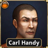

You Begin To Read Carmen Santamonica's Adventures From 2025-03-30
'TheStarMan' connected
'IllymetWaltsy' connected

GM
Greetings friends \o/
IllymetWaltsy (Carmen Santamonica): Hi miss GM lady!
TheStarMan (Professor Plato): howdy
'Carl Handy' connected
IllymetWaltsy (Carmen Santamonica): Hawu's here now too! :D
GM: Hoorah!
GM
I just realized that for comiong up with backstories, the game actually has tables for this
GM
To help come up with things like the ideology/belief, or the significant people
Carl Handy (Carl Handy): Roll for background
IllymetWaltsy (Carmen Santamonica): Helpful!
GM
Do y'all have a "Tables" category on the far right?
IllymetWaltsy (Carmen Santamonica): Under Campaign?
Professor Plato: [TABLE] 2. Ideology/Beliefs = [d10 = 5]
Member of a society or secret society (e.g. Freemason, Women's Institute, Anonymous).
IllymetWaltsy (Carmen Santamonica): Do we HAVE to roll? Or can we pick one based on what we think would best fit the character?
GM: You can pick
Carl Handy (Carl Handy): If you're able/interested Illy, we're in the voice call too ^_^
GM: There are two for Significant People: One is who they are, the other is your relationship to them
GM
There are two for Significant People: One is who they are, the other is your relationship to them
GM
You don't have to roll on all of these, but rolling on 2 or 3 is good
GM
(Or picking)
Professor Plato: [TABLE] 3a. Significant People - 1 = [d10 = 10]
A non-player character (NPC) in the game. Ask the Keeper to pick one for you.
Professor Plato: [TABLE] 5. Treasured Possessions = [d10 = 9]
A weapon (e.g. service revolver, your old hunting rifle, the hidden knife in your boot).
Professor Plato: [TABLE] 5. Treasured Possessions = [d10 = 7]
Something you found but you don't know what it is - you seek answers (e.g. a letter you found in a cupboard written in an unknown language, a curious pipe of unknown origin found among your late father's effects, a curious silver ball you dug up in your garden).
Professor Plato: [TABLE] 5. Treasured Possessions = [d10 = 6]
Your collection. What is it? (e.g. bus tickets, stuffed animals, records).
Carmen Santamonica: [TABLE] 3a. Significant People - 1 = [d10 = 3]
Sibling (e.g. brother, half-brother, stepsister).
Carmen Santamonica: [TABLE] 3a. Significant People - 1 = [d10 = 8]
A famous person. Your idol or hero. You may never have even met (e.g. lm star, politician, musician).
Carmen Santamonica: [TABLE] 3a. Significant People - 1 = [d10 = 2]
Grandparent (e.g. maternal grandmother, paternal grandfather).
Professor Plato: [TABLE] 5. Treasured Possessions = [d10 = 4]
A memento of a departed person (e.g. jewelry, a photograph in your wallet, a letter).
They give your life meaning. How? (e.g. you aspire to be like them, you seek to be with them, you seek to make them happy).
Carmen Santamonica: [TABLE] 5. Treasured Possessions = [d10 = 2]
An essential item for your occupation (e.g. doctor's bag, car, lock picks).

Carmen Santamonica
Wait, is there a d7?
IllymetWaltsy (Carmen Santamonica): Play dodgeball!
Professor Plato: [d10 = 1]
Professor Plato: [2d6 = 7]
IllymetWaltsy (Carmen Santamonica): The dice say NO
IllymetWaltsy (Carmen Santamonica): Today I learned! :D
IllymetWaltsy (Carmen Santamonica): Okay!
IllymetWaltsy (Carmen Santamonica): The notes next!
IllymetWaltsy (Carmen Santamonica): I did look into the stones yes
IllymetWaltsy (Carmen Santamonica): Subsquently
Carmen Santamonica
Yes I would like to resarch the notes that we collected from the basement, see if i can find anything that explains what was going on in the basement, and what these stones are
IllymetWaltsy (Carmen Santamonica): Absolutely a good choice
Carmen Santamonica: [SKILL] Lang - Own - English (60%) [Fail] (Spend 22 of your 28 luck to succeed.) [d100 = 82]
IllymetWaltsy (Carmen Santamonica): >:T Can I push that please??
Carmen Santamonica: [SKILL] Lang - Own - English (60%) [Fail] (Spend 26 of your 28 luck to succeed.) [d100 = 86]
IllymetWaltsy (Carmen Santamonica): Okay cool well that's awesome
IllymetWaltsy (Carmen Santamonica): I have shit luck with dice literally all the time omg
Carmen Santamonica: [ABILITY] Sanity Check (57%) [Extreme success] [d100 = 4]
Carmen pours over the notes of Walter Corbitt.
GM: Gain 6 points of Cthulhu Mythos
IllymetWaltsy (Carmen Santamonica): Got it!
He mentions his house many times, which he refers to by the Anglo-French "desmesne" most of the time. Throughout, the notes mention times when he had to provide favors owed from when he claimed the house, and details (quite bitterly) what resources were spent. They're phrased in terms of either time spent, power granted for some purpose, or in gibberish-like names. They're always granted to abbreviations, not to full names. Example: "broke another shell of the Opener in exchange for A.W.'s aid. One left." followed by scratchings of "hate him" or "Sent the shambler to M.T., debt paid"
He talks about his "immortality". Not how he achieved it, but of its tragedy. He rambles about the neighborhood no longer providing enough "fortune" to feed his spells and curses "Thomas" for it. He seems to be overtaken by madness, many of the notes being incoherent scratches or scribbles for periods of time.
He talks about his athame, the ritual dagger. He talks about sporadic sacrifices; cats, rats, and attempted human sacrifices to lift himself from his fugue. Even with his athame supposedly "streamlining the transfer of blood to power", it's never enough.
Carmen Santamonica eyes the dagger warily
And throughout, he talks more and more about the rats. He workshops a way to use a medallion he procured to funnel "the whispers of Khnum", which allowed him to control rats, bugs, and other vermin. He complains about its lack of finesse, but there's enough here to detail how to enact this yourself if you have the dagger and medallion.
Carmen Santamonica: As unluck would have it, she still has both...
IllymetWaltsy (Carmen Santamonica): In the office safe when she's not examining/studying it
IllymetWaltsy (Carmen Santamonica): This isn't instructions, it's vague notions of what could be done with these instruments?
Unlike the Book of Eibon, which seemed to have a breakdown on how to cast its spell, Carmen feels she'd have to put together the spell. It's something she could try to put together in the future, re-reading the book with the intent to learn more about the inner workings of Corbitt's magic.
IllymetWaltsy (Carmen Santamonica): Mhm mhm, that's what I though
[Professor Plato] -> [Carmen Santamonica] : Journals
IllymetWaltsy (Carmen Santamonica): Notes, stone, dagger, and medalion
Carl Handy: [SKILL] Stealth (20%) [Fail] (Spend 22 of your 48 luck to succeed.) [d100 = 42]
IllymetWaltsy (Carmen Santamonica): I mean you wouldn't need a big one
IllymetWaltsy (Carmen Santamonica): Yeah
Carl takes a trowel out to one of the local cemetaries and, when nobody is looking, buries the mason jar of ashes.
Carl Handy: [2d6 = 11]
IllymetWaltsy (Carmen Santamonica): Great roll!
Carl Handy: [SKILL] Spot Hidden (39%) [Fail] (Spend 13 of your 48 luck to succeed.) [d100 = 52]
Carl Handy: [SKILL] Spot Hidden (39%) [Regular success] (Spend 12 of your 48 luck to make it a Hard Success.) [d100 = 31]
Carl trains his Spot Hidden through the most grueling of regimens: puzzle boxes and Where's Waldo books. Over the course of several months, he gets pretty into it, progressing from a mere novice to something of an amateur. It helps that the orphans are super into it as well, and it becomes sort of a game at his workplace
IllymetWaltsy (Carmen Santamonica): That's ADORABL
Professor Plato trains his ability to Dodge through a pretty active regimen of aerobics. He takes up a class for it, working on his flexibility and balance so he's better able to bend out of the way of otherworldly horrors.
IllymetWaltsy (Carmen Santamonica): I mean we're in this together now!
IllymetWaltsy (Carmen Santamonica): Carmen def is
It's a few months down the line before the three of you receive a little letter in the mail, an invitation to dinner with Nina Richards of "The Society for the Exploration of the Unexplained". The letter reads:
IllymetWaltsy (Carmen Santamonica): :O!!!
"To Mr Carl Handy, Ms Carmen Santiago, and Professor ???? Plato (the first name is smudged out, unfortunately), We would like to cordially invite you to dine this weekend with us at the Willie Whitley Gallery to discuss interests which would certainly be to your interests. Please RSVP when available, -- Ms Nina Richards"
Carmen Santamonica
I absolutely intend to go

Carl Handy
Yes

Professor Plato
i suppose i could eat
IllymetWaltsy (Carmen Santamonica): YAY!!
Nina Richards is a middle-aged black woman with her hair pulled back into a floofy ponytail. She's seated at a table for four, and welcomes the group over.
IllymetWaltsy (Carmen Santamonica): For context I plan on leaving the notes and the stone at my office, I'm planning on bringing the dagger with me
IllymetWaltsy (Carmen Santamonica): My art now
IllymetWaltsy (Carmen Santamonica): Me :D
The gallery itself is pretty full, they've got an art showing going on this weekend but also have an attached restaurant. Lots of private parties booking tables and tours, though Nina's only booked the table in the corner.
IllymetWaltsy (Carmen Santamonica): :D
GM: I'll give you a point of luck if you use the dagger to eat some of the horderves
IllymetWaltsy (Carmen Santamonica): I'll take iit!
IllymetWaltsy (Carmen Santamonica): Okay, wait a sec then...
IllymetWaltsy (Carmen Santamonica): Comes back???
IllymetWaltsy (Carmen Santamonica): Okay then I'm not gonna
IllymetWaltsy (Carmen Santamonica): Do that
IllymetWaltsy (Carmen Santamonica): Harverd? Yale?

Nina Richards
I'm Nina Richards, reporter for the Society of the Exploration of the Unexplained. We're a magazine and club founded by scientists and specialists of Harvard, Miskatonic University, Columbia, and other top universities. It's our self-appointed job to look into strange happenings around the country and figure out what's really causing them.
Nina Richards
To that end, we received word that you, in the words of the advertisement, "unhaunted" a house. And I wanted to get some details on what you encountered and how you unhaunted it!
Nina holds out a newspaper article. "NEWLY REFURBISHED, RECENTLY UNHAUNTED, CONTACT STEPHEN KNOTT FOR GREAT PRICES"
Carmen Santamonica
A pleasure to meet you Ms. Richards. I'm Carmen Santamonica. And yes, we were involved in the, uh, unhaunting of Mr, Knott's residence.
Carmen Santamonica
We're still trying to figure out what exactly that means.
Nina Richards
So am I! Sounds like we're in the same boat.
Carmen Santamonica
But whatever we encountered in that house was defintely Unaxplained.
Professor Plato
I would also like to know how you were able to find out how we were connected to the house
Nina Richards pulls out a little notepad
Carmen Santamonica
C
Nina Richards
We spoke to Mr Knott the other day and he said that you were the ones he hired to look into the house. Said that aside from some damage to the windows and discovering a hidden room in the basement, you did a pretty stellar job with confirming it was fine.
IllymetWaltsy (Carmen Santamonica): Sorry I really need a new keyboard >:T
IllymetWaltsy (Carmen Santamonica): Ffs I was hoping no one would notice that first one...
IllymetWaltsy (Carmen Santamonica): Gdi
IllymetWaltsy (Carmen Santamonica): xD
Nina Richards
What sort of thing DID you encounter in that house? Was it a ghost?
Carmen Santamonica Looks back and fourth between the professor and Carl
Professor Plato
there were a lot of rats
Carmen Santamonica
If you two don't mind, I'd like to see what she has to say about what we saw
Carmen Santamonica
Right. The rats.
Carl Handy
I wouldn't mind getting some more perspective on what happened in there.
Carmen Santamonica
I'll include that..
Professor Plato
feel free to share what happened. don't forget to include the flaming rats. so many rats.
Carmen Santamonica recounts to the reporter in great detail the two days the three of them were researching and investigating the house of Mr. Knott
Nina Richards
Flaming rats... that certainly does sound exciting!
Nina Richards takes notes as Carmen goes on, letting her talk without much interruption
IllymetWaltsy (Carmen Santamonica): Post human??
Carmen Santamonica orders a drink
The group huddles for a bit, and a few minutes later Nina returns from the wash to listen to their story. They go over their supernatural escapades; the research they'd looked up on the house, the man appearing for a moment in their midst and the Professor's mental break, the bed, the rat attack, the fire bucket, and culiminating with the secret room and the undead(?) man within. Nina remains fascinated the whole time.
IllymetWaltsy (Carmen Santamonica): Perfect
They leave out the Chapel, the Liber Ivonis, and the things they took from the house.
Nina Richards
Fascinating! It's a shame he just dissolved into dust like that, that would've been headliner stories.
Nina Richards
We do like to publish our findings as well, is it okay if we publish your story here?
Carmen Santamonica
I don't see why not. We would appreciate keeping out names and likenesses out of the story if possible
Nina Richards
Oh of course! We always provide pseudonyms for people. I do also want to know, would any of you be interested in joining the Society? We can waive the yearly fee, provided you're active in the group. Most of the time it's just doing interviews like this, or going out to deliver books or do some readings.
IllymetWaltsy (Carmen Santamonica): We can wait for Hawu to get back for this next part
IllymetWaltsy (Carmen Santamonica): Though Carmen, is very much interested
IllymetWaltsy (Carmen Santamonica): Do we still want to ask about Nina?
IllymetWaltsy (Carmen Santamonica): Carl do you want to take point on that?
Carl Handy
Ms. Richards, we appreciate your interest. I'm curious about your background, and what benefits you see for our joining the Society?
Nina Richards
Benefits include societal contacts, of course, we've got people all throughout America and even to Europe, South America, and Asia. If taking a trip, the Society covers expenses like lodging and food. I myself am a Miskatonic University alumni, I'm a freelancer with a few different magazines. Been with the society for a good ten years now, it's quite a lot of fun. Even if some of the stories are a bit out there, the people are fascinating.
Carmen Santamonica
So you've only ever heard stories, never seen anything yourself?
Nina Richards
Well I haven't seen anything personally, but many of our members have. We find that it's the people with direct experience who have the most heart for the work, you know?
Nina Richards
Though on the flip side, it is often the people who are the most touched, and they sometimes do wind up institutionalized before long
Carl Handy
It seems silly to ask perhaps but I take it you are a believer in these phenemona, Ms Richards?
Nina Richards
I... believe that what you say is something you're convinced you saw, yes. I certainly don't think you're lying, any of you.
Carmen Santamonica
We're *convnced* we saw? Odd way to word a "no". *She adds with a small chuckle*
Nina Richards
People connect dots, sometimes through religion and sometimes through science. But whether or not I believe doesn't matter, your viewpoint is important.
IllymetWaltsy (Carmen Santamonica): yes! :D
Nina Richards takes a look at a sketch of the eye symbol
Nina Richards
Hmmmm, nope, I'm afraid it doesn't ring a bell
Carmen Santamonica: [SKILL] Psychology (53%) [Fail] (Spend 6 of your 28 luck to succeed.) [d100 = 59]
Carl Handy: [SKILL] Psychology (10%) [Critical success] [d100 = 1]
IllymetWaltsy (Carmen Santamonica): Damn Carl
GM
Do you sign up for the Society for the Exploration of the Unexplained?
Carmen Santamonica
I'm interested.
Carl Handy
Yes, I am as well.
Professor Plato
i suppose it would be a good opportunity. i'm in
Dinner concludes and Nina heads on her way. She has you fill out application forms, and gives the three of you a little calling card with the address for one of their offices in case you have any questions.
Professor Plato
i suppose it would be a good opportunity. i'm in
Professor Plato
i suppose it would be a good opportunity. i'm in
IllymetWaltsy (Carmen Santamonica): I didn't want to feel left out
We're gonna say that this original adventure took place originally in Spring 1925, so at this point we're in Autumn.
Nina Richards
This one?
GM
This is fine?
-------------------------------------------------- Application Slash Commands [required] <optional> -------------------------------------------------- /action [message] /clear /closewindow [windowclass] <datapath> /console /debug [on|off] /diceeffect [on|off] /dicevolume [0-100|on|off] /die [diceexpr] <message> /emote [message] /gc /imagequality [0-3] /info /kick [username] /mood ([mood]) <message> /mood [mood] <message> /ooc [message] /openwindow [windowclass] <datapath> /random [number] /reload /roll [diceexpr] <message> /save /scaledice <80-120> /scaleui <50-400> /story [message] /version /vote <message> /vsync [0-4]
-------------------------------------------------- Ruleset Slash Commands [required] <optional> -------------------------------------------------- /export /exportchar /exportnpc /flushdb /gmid [name] /id [name] /importchar /importnpc /mod [number] <message> /option [option_name] <option_value> /r [message] /rollon [table name] <-c [column name]> <-d dice> <-hide> /w [charactername] [message]
'TheStarMan' connected
'TheStarMan' disconnected
'TheStarMan' connected
GM
Test
Nina Richards
Test
Test
GM: test
Nina Richards test
'Carl Handy' connected
'IllymetWaltsy' connected
IllymetWaltsy (Carmen Santamonica): :O Pretty!!
Professor Plato
test
Carl Handy (Carl Handy): I'm takin my classes online, gettin my degree in my own time
Carl Handy hamburger
IllymetWaltsy (Carmen Santamonica): Some
IllymetWaltsy (Carmen Santamonica): BODY
IllymetWaltsy (Carmen Santamonica): Literally just stopped what I was doing to put on All Star
IllymetWaltsy (Carmen Santamonica): Some
A couple weeks later, the group receive letters in the mail. Enclosed is a letter from the Society for the Exploration of the Unexplained requesting your aid in transferring books back to Boston. Additionally, they included a copy of the letter they received from the original client.
According the SEU's addendum, they expect this to take probably two days, one to get out there and assess the books and then another to head back. They're planning to book you for the weekend, though, getting you out there Friday and then heading back Sunday.
Carmen Santamonica
Can we ask for an extension on the chance we take up the offer to look for Mr. Cornthwaite?
The gang gathers together to discuss it
Professor Plato
we should reach out to the SEU and see if they know anything about Mr. Corn. It seems suspicious he wanted to donate books related to SEU's interests and is now unreachable.
Carmen Santamonica
Maybe something in the books that he wants to donate resulted in his disappearance
Carl Handy
Hopefully as a member hopefully they have some info about him and his background.
Carmen Santamonica
Can we ask for an extension on the chance we take up the offer to look for Mr. Cornthwaite?
Carmen Santamonica
We'll have Carl's truck
Carmen Santamonica
I don't leave home without it
GM
SEU's letter mentions "Mr Cornthwaite is a wealthy and successful archeologist and has been with the Society for nearly a decade now. He recently decided to donate his rather impressive library."
Carl Handy: [ABILITY] Luck Check (48%) [Fail] [d100 = 87]
Professor Plato: [ABILITY] Luck Check (65%) [Regular success] [d100 = 46]
Carmen Santamonica: [ABILITY] Luck Check (28%) [Fail] [d100 = 29]
Carmen Santamonica
Shut
Carmen Santamonica
Shut
Carmen Santamonica
Up
Carmen Santamonica
Shush
IllymetWaltsy (Carmen Santamonica): What ever
Carmen Santamonica: [SKILL] Spot Hidden (60%) [Hard success] (Spend 15 of your 28 luck to make it an Extreme Success.) [d100 = 27]
Professor Plato: [SKILL] Spot Hidden (41%) [Fail] (Spend 28 of your 65 luck to succeed.) [d100 = 69]
Carl Handy: [SKILL] Spot Hidden (50%) [Fail] (Spend 31 of your 48 luck to succeed.) [d100 = 81]
-> Carmen Santamonica: Carmen's started to have a bit of an issue at the office with regards to rats. She keeps setting traps and complaining to the landlord, but the building has a particularly bad infestation now and you can't help but think toward your more recent experiences.
Carmen Santamonica
I'm moving the medalion to a personal bank account away from my office
IllymetWaltsy (Carmen Santamonica): So if we can pack it in the truck, we should
Carmen Santamonica: is this okay ^^
-> Carmen Santamonica: Yes :3
Carmen Santamonica: does that help with the rats?
-> Carmen Santamonica: Not overnight at least, we'll have to see over time.
GM
We shall call it for now, and continue next weekend as you roll into town :3